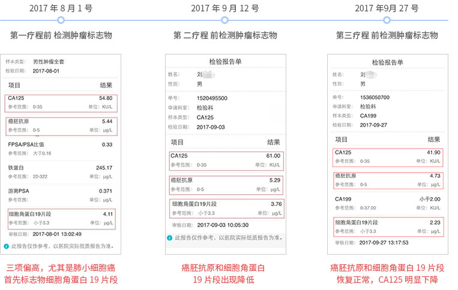

-
一、细胞治疗肺癌
L主任，72岁，萧山医院返聘主任，非小细胞肺癌，进行了手术切除和化疗疗程，病情稳定。治疗后4个月时，复查肿瘤标志物出现升高，有复发迹象。
2、制定方案：
每个月一个疗程免疫细胞方案
3、效果
8月11号进行第一次细胞组合方案，9月12号第二个疗程，10月12号进行第三个疗程，每个疗程之前进行肿瘤标志物检测，肿瘤标志物明显下降，甚至恢复正常值。病人食欲精神睡眠明显好转。

-
二、细胞治疗胃癌
1、病情描述
Y女士，70岁。胃癌并多处淋巴结转移，已做过手术切除。身体虚弱，行走需要搀扶。
2、制定方案：
每个月一个疗程免疫细胞方案
3、效果
2016.12.6回输后身体状态明显提升，精神变好，体力提升，可以爬一小时坡路，生活质量提高。后续每半年进行一个疗程，目前状态保持良好。
-
三、细胞治疗食道癌
1、病情描述
W先生，1938年生，2013年发现食道癌晚期，然后进行手术放化疗治疗。治疗后并不理想， 生命几度垂危。
2、制定方案：
每个月一个疗程免疫细胞方案
3、效果
2016年再一次急救抢救过后，进行免疫多细胞疗程，疗程过后状态逐渐恢复，目前病情稳定。